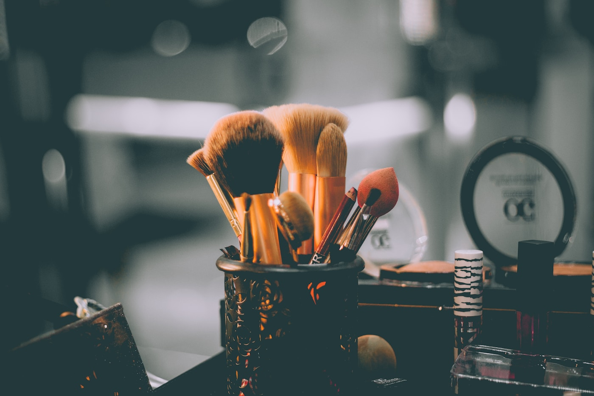
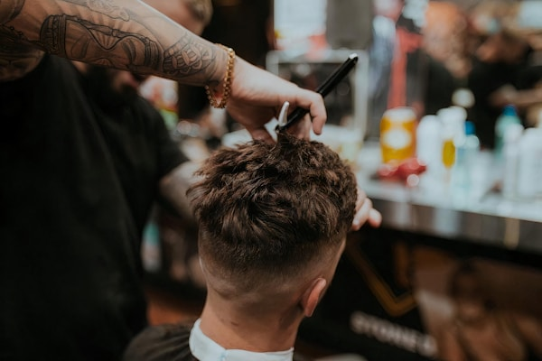
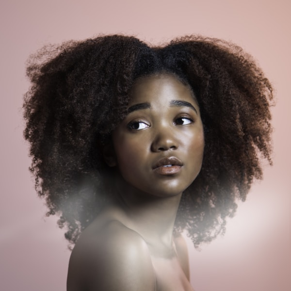
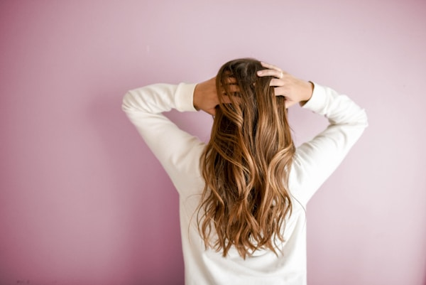

Lavapiés · dos sillas
Peluquería & barbería de barrio
Un local pequeño en la calle del Pez. Aquí no hay recepción ni fila de lavacabezas: somos Nuria, dos espejos y la música que toque ese día.
Reservar cita
En la carta
Te decimos el precio antes de empezar. Si el pelo es muy largo o el color lleva trabajo, lo hablamos en persona.
- Corte18 €
- Corte + barba26 €
- Solo barba12 €
- Raíces / tintedesde 32 €
- Mechas suavesdesde 55 €
- Brushing15 €
- Mascarilla reparadora+12 €
Los sábados por la tarde a veces nos ayuda Laura con color. Si quieres verla, dímelo al escribir.
Algunos cortes
de esta semana





Quién te corta el pelo
Nuria Vela
Llevo quince años con tijera en la mano. Abrí La Silla porque echaba de menos el ritmo lento de las peluquerías de barrio: conocer a la gente, recordar cómo le gusta el degradado y no mirar el reloj cada cinco minutos.
Me gustan los cortes sencillos que se mantienen bien dos semanas, las barbas con contorno marcado y el color que no parezca tinte. Si no sabes qué pedir, lo vemos juntos frente al espejo.
«Voy desde que abrieron. Es pequeño, sí, pero eso es lo bueno: Nuria te conoce y no te cambia de persona a mitad del corte.»
— Miguel, cada seis semanas
Visítanos
Calle del Pez, 18Lavapiés · Madrid
- Mar–vie
- 10:00 – 19:30
- Sábado
- 10:00 – 14:00
- Domingo
- Cerrado
Antes de venir
- Pide cita por WhatsApp. Respondemos en el día.
- Si llegas tarde más de diez minutos, puede que tengamos que mover la cita.
- Aceptamos efectivo, Bizum y tarjeta.